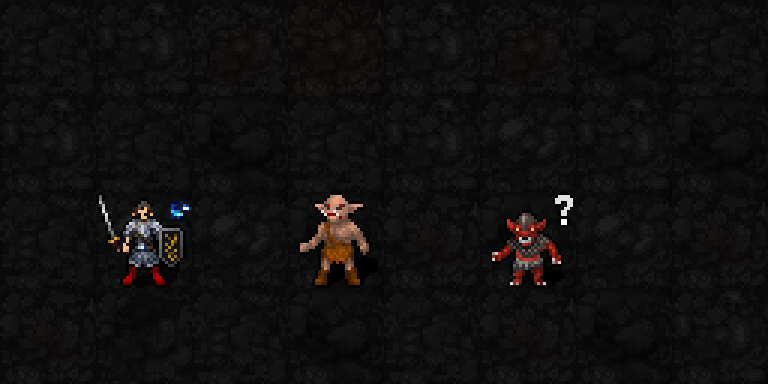
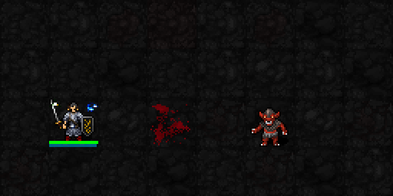

왼쪽은 플레이어,가운데 적A는 오크,오른쪽 적B는 고블린입니다. 일반 마법의 다트를 실제 시전하며 진행했습니다. 처음 적에게 별을1·2·3개 쌓고 처치합니다. 다음 적에게 적중하면 별1개를 거치지 않고2개가 붙습니다.
실제 SDL 게임 화면을 잘라 정수배 확대하고 읽기 쉽게 느리게 반복했습니다. 별을 화면에 덧그리지 않았습니다. 검사장에서는 적 행동을 정지하고 HP를 높였으며,첫 적의 마지막 처치 직전에 HP를1로 준비했습니다. 주문 MP·행동 시간·처치 보상·별의 계승·다음 공격은 실제 게임 처리입니다.

처치 보상 대기 → 다음 적에게 별2개 → 다음 공격으로 최대3개. 별2개부터2성 집중 관측도 활성화되며,명중 보너스는 이후 명중 판정 공격부터 적용됩니다.
| 해금 | 신앙100,최소 기도술 없음 |
| 효과 | 기존1성 처치 보상을 다음 새 표적에게 소비한 직접 공격에서 실제 피해를 주고 적이 살아남으면,별을1개 대신2개로 시작 |
| 추가 비용 | MP·신앙·추가 턴 소모 없음. 무기/주문의 원래 비용은 정상 적용 |
| 기도술 | 계승 수치는 고정2개. 기존 권능의 기도술 피해식과 별 최대3개는 그대로 |
| 빗나감 | 처치 보상 유지,계승 없음 |
| 한 방 처치 | 적이 죽었으므로 별 계승 없음. 보상 추가 피해만으로 처치해도 보상 무한 재획득 없음 |
| 이미 별이 있는 적 | 보통처럼1개만 추가,최대3개 |
| 유효 시간 | 기존 처치 보상3턴 유지. 만료하면 다음 적도 보통1개부터 시작 |
실제 외운 주문6회와 원래MP·행동 시간,실제 표적 처치·계승2개·다음 타격3개,빗나감/한 방 처치/보상만으로 처치/만료/신앙99·100/권능 제외,죽은 표적 해제와 보상 재귀 방지 확인. 처치와 다음 공격 사이에 저장한 뒤 새 프로세스에서 같은 주문으로2개 시작·후속 전투 상태 복원과 UI를 분리한 일반 전투 난수 재현 검사를 통과했습니다. 기존1·2·3·5성·22신 회귀 검사도 통과 후 일반 실행본에 반영했습니다.
보상 저장 상태와 난수는 정확히 복원되며,다음 일반 주문의 별·피해·자원·시간·적 상태도 일치했습니다. 타깃 UI를 분리한 전투 적중 처리도 상태와 난수가 일치합니다. 다만 전체 타깃 선택 UI까지 포함한 재생의 최종 난수는 차이가 남아 있어 별도 점검으로 기록했습니다.